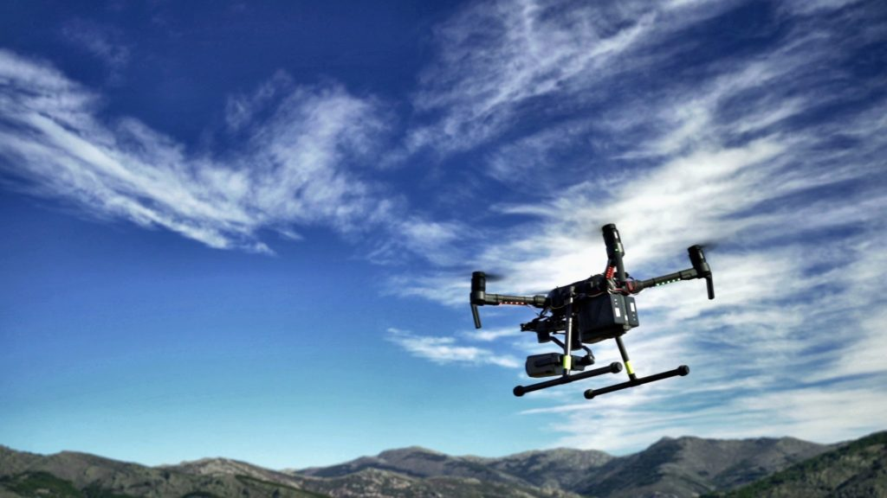
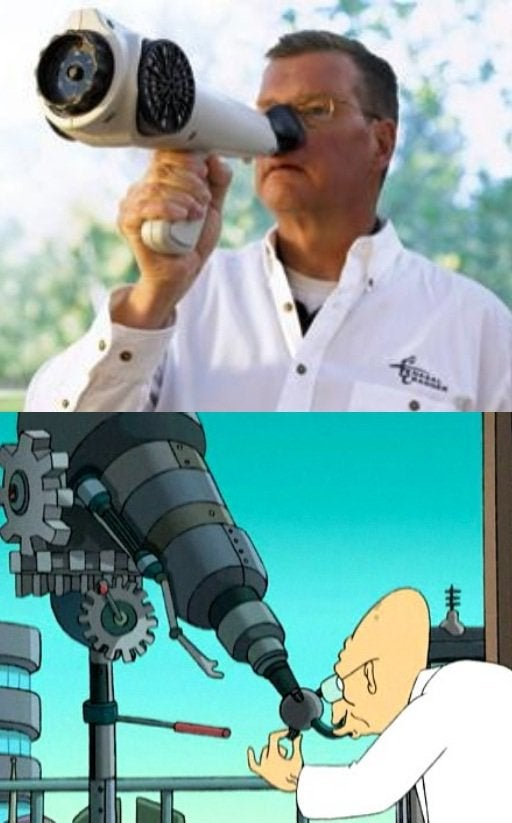
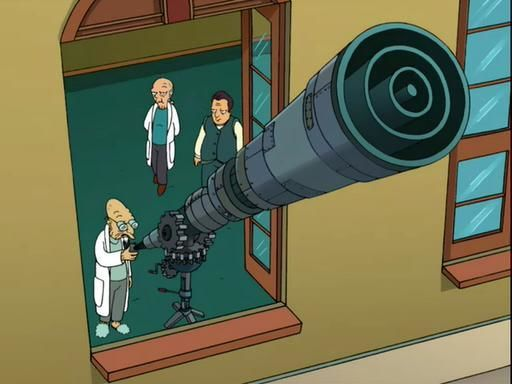

Dogs can recognise and smell somewhere between 10,000 and 100,000 times better than humans.
One reason dogs have a much better sense of smell is the number of scent receptors they possess.
A dog has up to 300 million olfactory receptors in its nose, compared with about six million in humans.
Olfactory or scent receptors are located farther back in the nasal cavity. They detect airborne molecules entering the cavity and binding to the receptors. Activation causes olfactory neurons to send an impulse to the brain’s olfactory system.
Dogs smell all kinds of things. What about technology that can smell almost everything that can be smelled?
It might recognise hidden objects or allow a drone to follow the scent of a missing person, or identify ingredients for the best cooking or a delicious cake. There are countless possibilities for this future technology.
Many industries could benefit from this “natural technology”. The security industry is one that could gain considerably from smell-detecting technology.

Imagine machines using smell to perform airport checks. Smuggling anything between countries could become very difficult, perhaps impossible, unless someone finds a way to disable the machine or an advanced method of hiding certain smells.
Imagine these machines smelling all kinds of things. What about metal? Could they smell weapons? If so, they might prevent countless catastrophic situations.
Imagine drones operating independently, detecting dangers by smell and warning a control centre. This is where fire safety comes in. When there is a risk of forest fire, a group of automated drones, large or small, could be sent to the area to detect a possible fire. In this way we could anticipate situations that might otherwise become unforeseen disasters.

It should be fairly straightforward to design a drone that detects fire by integrating already advanced fire alarms into suitably advanced drones.
Read a little about fire drones here. Read the related article
Automated fire-alarm drones could go out to detect small fires before they become giant ones.
What about detecting new organisms or ingredients that could be used in medicine? Is there a plant containing a chemical that could be important for treating a disease? Who knows? A machine might know.
Once the range of this technology is good enough, it could be used fully. An artificial sense of smell could operate over several metres. Longer distances can only be speculated about until someone determines what is possible. Perhaps a sound theory already explains what is and is not possible. Who knows? A future person or group may know.
Here are some examples of people and organisations that have developed forms of artificial smell technology:
An electronic nose has been in development since the 1950s, but the field has begun to take off only in more recent years.
ScentSational Technologies LLC (USA)
Founded in 1997, it develops, patents and licenses scent and packaging technologies for food, beverages, pharmaceuticals, personal care and consumer products.
Scent Sciences Corporation (USA)
Founded in 2010.
It develops and markets personal scent-delivery devices for consumer uses including the internet, games, films and television. It also offers ScentScape, a digital system adding scent to games, entertainment and other consumer content.
Smiths Detection Inc. (USA)
Founded in England in the 1950s.
A global provider of threat-detection and security-screening technology intended to protect society against explosives, prohibited weapons, smuggling, toxic chemicals and drugs.
Electronic Sensor Technology (USA)
Founded in 1995.
It develops and offers zNose, a device designed to detect and analyse chemical odours and vapours.
Scentcom Ltd. (Israel)
Founded in 2007.
It developed a hand-sized portable scent device intended to replace traditional sprays, candles and air fresheners. The device lets users customise scent experiences using a smartphone.
The eNose Company (Netherlands)
Founded in 2013, this company focuses on disease screening using breath analysis.
It developed a dedicated point-of-care electronic nose, Aeonose, for this purpose.
After pilot studies in oncology and infectious and neurological diseases, the company now focuses on conditions including colorectal cancer, lung cancer and tuberculosis.
AIRSENSE Analytics GmbH (Germany)
Founded in 1996.
The company develops and manufactures high-quality instruments for first response, public safety, aviation, logistics and the environment.
It is an internationally recognised supplier of security equipment.
It supplies mobile, reliable detection devices that deliver results in seconds.
The descriptions of the companies above were drawn and edited from information available on the World Wide Web.
What else could this machine smell?
And the big question: how do you develop something like this?

More Natural Technology to follow…
For example: copying animal behaviour techniques.

The image of the man with the white object on his nose shows a so-called Nasal Ranger, intended to detect drugs by smell.
The other images show Futurama’s smell-o-scope, which can smell across space.